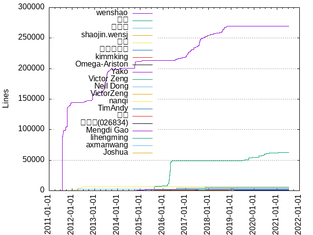
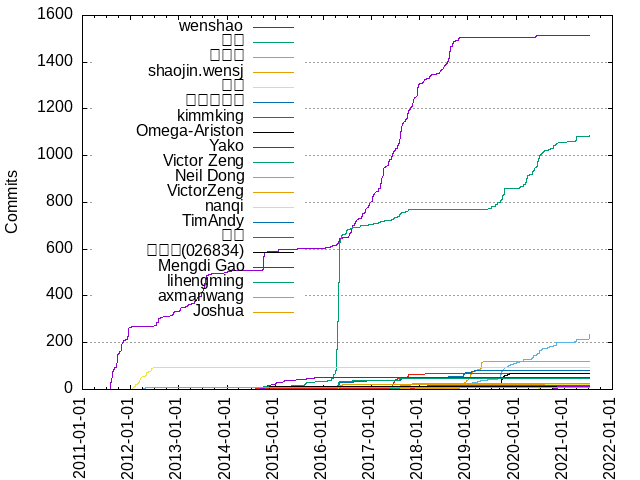

Authors
| Author | Commits (%) | + lines | - lines | First commit | Last commit | Age | Active days | # by commits |
|---|
| wenshao | 1514 (38.65%) | 269701 | 89487 | 2011-07-31 | 2020-05-31 | 3227 days, 5:44:00 | 492 | 1 |
| 高铁 | 1085 (27.70%) | 62875 | 22312 | 2014-02-06 | 2021-07-08 | 2708 days, 15:03:43 | 247 | 2 |
| 温绍锦 | 237 (6.05%) | 135 | 15 | 2018-03-25 | 2021-07-10 | 1202 days, 20:16:38 | 108 | 3 |
| shaojin.wensj | 120 (3.06%) | 6262 | 889 | 2015-07-06 | 2019-05-03 | 1396 days, 13:32:34 | 38 | 4 |
| 温少 | 92 (2.35%) | 6130 | 849 | 2012-01-17 | 2012-06-22 | 157 days, 4:35:50 | 40 | 5 |
| 业余布道师 | 81 (2.07%) | 2478 | 1416 | 2016-04-19 | 2019-02-27 | 1043 days, 10:50:18 | 41 | 6 |
| kimmking | 70 (1.79%) | 2083 | 179 | 2014-01-15 | 2020-01-05 | 2181 days, 7:59:57 | 37 | 7 |
| Omega-Ariston | 68 (1.74%) | 2775 | 151 | 2019-08-15 | 2019-11-18 | 94 days, 16:05:40 | 30 | 8 |
| Yako | 50 (1.28%) | 1498 | 219 | 2014-07-28 | 2015-10-29 | 457 days, 23:18:49 | 24 | 9 |
| Victor Zeng | 48 (1.23%) | 4332 | 1775 | 2016-04-19 | 2017-08-10 | 477 days, 23:53:30 | 16 | 10 |
| Neil Dong | 25 (0.64%) | 5289 | 1082 | 2017-07-22 | 2017-11-07 | 107 days, 21:26:29 | 9 | 11 |
| VictorZeng | 22 (0.56%) | 414 | 26 | 2016-04-21 | 2019-02-07 | 1022 days, 8:33:38 | 12 | 12 |
| nanqi | 20 (0.51%) | 697 | 37 | 2020-06-22 | 2020-08-16 | 55 days, 4:53:05 | 15 | 13 |
| TimAndy | 16 (0.41%) | 722 | 98 | 2019-01-07 | 2021-03-29 | 811 days, 20:51:01 | 6 | 14 |
| 温绍 | 15 (0.38%) | 0 | 0 | 2017-10-08 | 2018-02-26 | 140 days, 13:16:46 | 13 | 15 |
| {李彦慧}({026834}) | 11 (0.28%) | 350 | 35 | 2014-11-18 | 2014-11-20 | 1 day, 20:28:46 | 3 | 16 |
| Mengdi Gao | 11 (0.28%) | 73 | 33 | 2020-10-08 | 2020-11-10 | 33 days, 12:24:19 | 5 | 17 |
| lihengming | 10 (0.26%) | 344 | 39 | 2017-05-22 | 2017-07-30 | 69 days, 5:00:07 | 3 | 18 |
| axmanwang | 10 (0.26%) | 2606 | 1387 | 2012-04-10 | 2012-04-26 | 15 days, 20:09:07 | 4 | 19 |
| Joshua | 10 (0.26%) | 322 | 77 | 2018-07-02 | 2018-07-03 | 18:08:06 | 2 | 20 |
These didn't make it to the top: 温高铁, xiazs, chenjiechuan 00492660, Certseeds, wuwen, mpadillatabuenca, auntyellow, zeyuuuuuuuu, gongdewei, ptma, chen623, blindarcheology, bingoko, arronhuang, 东杰, zhaojie, yanquanyu, yangy, yakolee, wxisme, qifanyang, lichengwu, imknown J. Kimu, dependabot[bot], chenjiechuan, S N Munendra, Ready, ORDTesters, Jiechuan Chen, Ben Lambeth, 邱占波, 张云飞, 姜禹, ziheng, yl-yue, shibenli, nschaffner, mozhu, jian.li02, ianate, hanyunfei_iwm, ganyu.gy, duxinglangzi, cpugputpu, SongLing Dong, Lihao, Jerry Lee, CodePlayer, 9908842844@qq.com, 阿金, 王栋, 牧瑾, 暮光：城中城, 宇智, ziteng, zhibo.liu, zgray, wumin, wangzhaoning, tenwx, sundy-li, researchlive, next-On-Ubuntu, netroby, neko, maxiaoyao, lightsing, lethal233, jmz11, itsVol, contextshuffling, cnlyml, biyanwen, Zhangbohong Gao, Xie xingcai, Thomas Liu, T45K, Sergio Escalante, Ruan, RLin2015New, Mairuis, LQZYC, John Bergqvist, Jerry.Chen, JacceYang, Goofy, Gerrit Grunwald, Bo Zhang, 胡龙, 杨鹏, 朱小杰, 文武, 千橙, zhaiyongchao, yumin.pym, yuankui, ys, yongqing.zhangyq, yixian, yewberry, yangyu, xladykiller, xiaqingyun, xdshen, wkkata, wen0909, weiwensangsang, wb-yh372649, water, wanxin.twx, wangxin03, vacuity, unknown, toutoudnf, testfixer, stonecheung, stone, shenzhou-6, quantum0mechanics, pepov, mz0827, mysh, mymilkbottles, mrkcsc, messense, max, machunlin, luoshaojun1, lixiaohao, libinglong, liaozan, liangchuyi, laugh, lZl, kingom0426, kiddingYang, kidding, jiangjufa, hnyyghk, hexiaobing5880, ganghuo, gagechan, gaecfov, flym, firepirate, fanzhongwei, eden-yuan, danieldingzju, clark, buer, bohr, anirudhdmenon, aluode99, a.pomosov, Zhuweiming, Zhang Si, Yorkson, WangXin, WANG Ziqin, Vladislav Bauer, Vasiliy, Sven Efftinge, Studiedlist, Steven Spasbo, Shuo Yu, Shilong Li, SheetJSDev, SelfRidicule, SOTB, S1ahs3r, Ronnin Lee, Raghava G Dhanya, Prayag Verma, Paul Verest, OrdTesters, OrDTesters, Nikhil Kumar, Nextyo, Neal Zhu, Morton Fox, Mingjun Liu, M-AJ, Koy, Kant Leung, J-Cod3r, Helly Guo, Felix Yan, Felix Bergmann, FelicityWY, Fabian Meumertzheim, FAnett1997, Corey, Charkey, Chao Shi, Andrew Wang, AmaiHotaru, 18581489108
Only top 20 authors shown
Only top 20 authors shown
| Month | Author | Commits (%) | Next top 5 | Number of authors |
|---|
| 2021-07 | 温绍锦 | 21 (91.30% of 23) | 高铁, dependabot[bot] | 3 |
| 2021-06 | itsVol | 2 (28.57% of 7) | RLin2015New, 千橙, hnyyghk, 18581489108 | 5 |
| 2021-05 | kingom0426 | 1 (25.00% of 4) | dependabot[bot], Nikhil Kumar, AmaiHotaru | 4 |
| 2021-04 | 高铁 | 19 (44.19% of 43) | 温绍锦, Certseeds, lethal233, yewberry, mpadillatabuenca | 9 |
| 2021-03 | mpadillatabuenca | 6 (24.00% of 25) | 高铁, Certseeds, yl-yue, 温绍锦, TimAndy | 9 |
| 2021-02 | xiaqingyun | 1 (50.00% of 2) | vacuity | 2 |
| 2021-01 | 高铁 | 4 (44.44% of 9) | ganyu.gy, Xie xingcai, 温绍锦 | 4 |
| 2020-12 | jmz11 | 2 (66.67% of 3) | ganyu.gy | 2 |
| 2020-11 | 温绍锦 | 11 (40.74% of 27) | 高铁, Mengdi Gao, 胡龙, FAnett1997 | 5 |
| 2020-10 | 高铁 | 19 (46.34% of 41) | 温绍锦, Mengdi Gao, blindarcheology, Gerrit Grunwald, wangzhaoning | 10 |
| 2020-09 | blindarcheology | 3 (20.00% of 15) | 高铁, 温绍锦, neko, biyanwen, T45K | 8 |
| 2020-08 | 温绍锦 | 7 (33.33% of 21) | 高铁, nanqi, 暮光：城中城, luoshaojun1, aluode99 | 7 |
| 2020-07 | 高铁 | 20 (55.56% of 36) | 温绍锦, nanqi, 杨鹏 | 4 |
| 2020-06 | 高铁 | 50 (58.14% of 86) | 温绍锦, nanqi, lichengwu, SelfRidicule, OrdTesters | 6 |
| 2020-05 | 高铁 | 30 (37.97% of 79) | 温绍锦, wenshao, gongdewei, arronhuang, yangy | 15 |
| 2020-04 | 高铁 | 6 (42.86% of 14) | 温绍锦, zhibo.liu, 朱小杰, quantum0mechanics, kiddingYang | 6 |
| 2020-03 | 高铁 | 38 (82.61% of 46) | chenjiechuan 00492660, 温绍锦, cpugputpu | 4 |
| 2020-02 | 高铁 | 14 (42.42% of 33) | 温绍锦, zeyuuuuuuuu, cpugputpu, testfixer, Yorkson | 7 |
| 2020-01 | 温绍锦 | 9 (45.00% of 20) | 高铁, ziteng, mymilkbottles, kimmking, kidding | 10 |
| 2019-12 | auntyellow | 6 (37.50% of 16) | 温绍锦, 高铁, xdshen, wangzhaoning, max | 9 |
| 2019-11 | 温绍锦 | 10 (47.62% of 21) | Omega-Ariston, 高铁, Mairuis, Bo Zhang, weiwensangsang | 7 |
| 2019-10 | 高铁 | 24 (52.17% of 46) | 温绍锦, Omega-Ariston, ganghuo, contextshuffling, SheetJSDev | 6 |
| 2019-09 | Omega-Ariston | 49 (39.20% of 125) | 温绍锦, 高铁, Jiechuan Chen, wkkata, wb-yh372649 | 7 |
| 2019-08 | 高铁 | 11 (27.50% of 40) | Omega-Ariston, 温绍锦, chenjiechuan, chenjiechuan 00492660, Jiechuan Chen | 12 |
| 2019-07 | 高铁 | 9 (64.29% of 14) | TimAndy, 温绍锦, wxisme, chenjiechuan 00492660 | 5 |
| 2019-06 | 高铁 | 10 (100.00% of 10) | | 1 |
| 2019-05 | 温绍锦 | 3 (27.27% of 11) | shaojin.wensj, nschaffner, 高铁, S N Munendra | 5 |
| 2019-04 | shaojin.wensj | 32 (86.49% of 37) | 温绍锦, liangchuyi | 3 |
| 2019-03 | shaojin.wensj | 7 (46.67% of 15) | 温绍锦, S N Munendra, Corey | 4 |
| 2019-02 | TimAndy | 10 (32.26% of 31) | 业余布道师, 温绍锦, shaojin.wensj, ziheng, VictorZeng | 7 |
| 2019-01 | shaojin.wensj | 34 (79.07% of 43) | 温绍锦, TimAndy, Lihao, 业余布道师, toutoudnf | 6 |
| 2018-12 | shaojin.wensj | 15 (39.47% of 38) | 温绍锦, 业余布道师, 王栋, Sergio Escalante, libinglong | 7 |
| 2018-11 | shaojin.wensj | 18 (52.94% of 34) | 业余布道师, ORDTesters, 温绍锦 | 4 |
| 2018-10 | wenshao | 16 (100.00% of 16) | | 1 |
| 2018-09 | wenshao | 24 (100.00% of 24) | | 1 |
| 2018-08 | wenshao | 68 (89.47% of 76) | 温绍锦, wxisme, 业余布道师 | 4 |
| 2018-07 | wenshao | 27 (55.10% of 49) | Joshua, 温绍锦, 张云飞, 业余布道师, John Bergqvist | 7 |
| 2018-06 | wenshao | 13 (76.47% of 17) | 温绍锦, 业余布道师, Lihao | 4 |
| 2018-05 | wenshao | 12 (75.00% of 16) | zgray, 温绍锦, 张云飞 | 4 |
| 2018-04 | wenshao | 2 (100.00% of 2) | | 1 |
| 2018-03 | wenshao | 15 (83.33% of 18) | cnlyml, 温绍锦 | 3 |
| 2018-02 | wenshao | 14 (70.00% of 20) | 温绍, netroby, kimmking | 4 |
| 2018-01 | wenshao | 9 (64.29% of 14) | 温绍, 业余布道师, M-AJ | 4 |
| 2017-12 | wenshao | 59 (96.72% of 61) | 温绍, kimmking | 3 |
| 2017-11 | wenshao | 38 (70.37% of 54) | 温绍, Neil Dong, duxinglangzi, wangxin03, WangXin | 7 |
| 2017-10 | wenshao | 40 (54.05% of 74) | kimmking, 高铁, 温绍, Neil Dong, 业余布道师 | 8 |
| 2017-09 | wenshao | 31 (70.45% of 44) | chen623, 高铁, 牧瑾, Thomas Liu, Neil Dong | 6 |
| 2017-08 | wenshao | 71 (64.55% of 110) | 高铁, Neil Dong, 业余布道师, kimmking, Victor Zeng | 11 |
| 2017-07 | wenshao | 44 (47.83% of 92) | 高铁, kimmking, lihengming, Neil Dong, Victor Zeng | 9 |
| 2017-06 | wenshao | 29 (43.28% of 67) | kimmking, 高铁 | 3 |
| 2017-05 | wenshao | 39 (67.24% of 58) | kimmking, 高铁, yanquanyu, lihengming | 5 |
| 2017-04 | wenshao | 41 (89.13% of 46) | 高铁, Raghava G Dhanya, Helly Guo | 4 |
| 2017-03 | wenshao | 54 (84.38% of 64) | 高铁, 姜禹, yangyu, lixiaohao | 5 |
| 2017-02 | wenshao | 17 (68.00% of 25) | 高铁, wuwen, xladykiller, Victor Zeng, Jerry.Chen | 6 |
| 2017-01 | wenshao | 40 (80.00% of 50) | bingoko, 高铁, wuwen | 4 |
| 2016-12 | wenshao | 28 (75.68% of 37) | 高铁, wuwen, Charkey | 4 |
| 2016-11 | wenshao | 24 (75.00% of 32) | 高铁, 业余布道师, 文武, S1ahs3r, Mingjun Liu | 6 |
| 2016-10 | wenshao | 22 (70.97% of 31) | 高铁, jian.li02, Jerry.Chen | 4 |
| 2016-09 | wenshao | 14 (70.00% of 20) | 高铁, 业余布道师, laugh, imknown J. Kimu | 5 |
| 2016-08 | wenshao | 30 (75.00% of 40) | 高铁, imknown J. Kimu, 业余布道师, Victor Zeng | 5 |
| 2016-07 | wenshao | 34 (70.83% of 48) | 高铁, Ben Lambeth, 业余布道师, zhaiyongchao, Victor Zeng | 6 |
| 2016-06 | 高铁 | 18 (64.29% of 28) | xiazs, wenshao, ianate, Victor Zeng | 5 |
| 2016-05 | 高铁 | 141 (79.66% of 177) | wenshao, 业余布道师, zhaojie, xiazs, VictorZeng | 12 |
| 2016-04 | 高铁 | 458 (81.21% of 564) | Victor Zeng, wenshao, 业余布道师, VictorZeng, hanyunfei_iwm | 9 |
| 2016-03 | 高铁 | 20 (64.52% of 31) | Ready, wenshao, Goofy, CodePlayer | 5 |
| 2016-02 | 高铁 | 9 (52.94% of 17) | wenshao, yixian, mysh, danieldingzju | 5 |
| 2016-01 | 高铁 | 4 (33.33% of 12) | 东杰, wenshao, mrkcsc, Prayag Verma | 5 |
| 2015-11 | 高铁 | 1 (25.00% of 4) | yongqing.zhangyq, wenshao, Felix Yan | 4 |
| 2015-10 | Yako | 4 (80.00% of 5) | Ronnin Lee | 2 |
| 2015-09 | Yako | 1 (100.00% of 1) | | 1 |
| 2015-08 | 高铁 | 13 (50.00% of 26) | qifanyang, Yako, shaojin.wensj, yuankui, lZl | 7 |
| 2015-07 | shaojin.wensj | 4 (44.44% of 9) | 高铁, machunlin, LQZYC | 4 |
| 2015-06 | wenshao | 4 (36.36% of 11) | wumin, 高铁, 邱占波, shibenli, Yako | 7 |
| 2015-05 | mozhu | 3 (30.00% of 10) | Yako, 高铁, shibenli, Jerry Lee, CodePlayer | 6 |
| 2015-03 | Yako | 5 (71.43% of 7) | wenshao, shibenli | 3 |
| 2015-02 | 邱占波 | 1 (50.00% of 2) | bohr | 2 |
| 2015-01 | Yako | 10 (58.82% of 17) | wenshao | 2 |
| 2014-12 | Yako | 3 (100.00% of 3) | | 1 |
| 2014-11 | {李彦慧}({026834}) | 11 (44.00% of 25) | Yako, wenshao | 3 |
| 2014-10 | wenshao | 75 (88.24% of 85) | Yako, 高铁 | 3 |
| 2014-09 | 高铁 | 8 (57.14% of 14) | Zhangbohong Gao, Yako, 邱占波, wenshao | 5 |
| 2014-08 | ptma | 1 (33.33% of 3) | kimmking, Paul Verest | 3 |
| 2014-07 | Yako | 2 (100.00% of 2) | | 1 |
| 2014-06 | 高铁 | 1 (50.00% of 2) | ptma | 2 |
| 2014-05 | yakolee | 4 (80.00% of 5) | ptma | 2 |
| 2014-04 | ptma | 2 (100.00% of 2) | | 1 |
| 2014-03 | wenshao | 1 (50.00% of 2) | pepov | 2 |
| 2014-02 | wenshao | 5 (71.43% of 7) | 高铁, kimmking | 3 |
| 2014-01 | wenshao | 4 (80.00% of 5) | kimmking | 2 |
| 2013-12 | wenshao | 3 (100.00% of 3) | | 1 |
| 2013-11 | 阿金 | 2 (66.67% of 3) | mz0827 | 2 |
| 2013-10 | wenshao | 3 (60.00% of 5) | 温高铁, Steven Spasbo | 3 |
| 2013-09 | wenshao | 3 (75.00% of 4) | Chao Shi | 2 |
| 2013-08 | wenshao | 5 (100.00% of 5) | | 1 |
| 2013-07 | wenshao | 66 (100.00% of 66) | | 1 |
| 2013-06 | wenshao | 27 (93.10% of 29) | 温高铁, Andrew Wang | 3 |
| 2013-05 | wenshao | 22 (100.00% of 22) | | 1 |
| 2013-04 | wenshao | 10 (90.91% of 11) | 温高铁 | 2 |
| 2013-03 | wenshao | 5 (55.56% of 9) | 温高铁, stonecheung, stone | 4 |
| 2013-02 | wenshao | 8 (100.00% of 8) | | 1 |
| 2013-01 | wenshao | 15 (100.00% of 15) | | 1 |
| 2012-12 | 温高铁 | 3 (50.00% of 6) | wenshao | 2 |
| 2012-11 | wenshao | 17 (100.00% of 17) | | 1 |
| 2012-10 | wenshao | 3 (100.00% of 3) | | 1 |
| 2012-09 | wenshao | 2 (100.00% of 2) | | 1 |
| 2012-08 | wenshao | 7 (87.50% of 8) | 温高铁 | 2 |
| 2012-07 | wenshao | 30 (96.77% of 31) | flym | 2 |
| 2012-06 | 温少 | 15 (83.33% of 18) | wenshao | 2 |
| 2012-05 | 温少 | 9 (100.00% of 9) | | 1 |
| 2012-04 | 温少 | 15 (60.00% of 25) | axmanwang | 2 |
| 2012-03 | 温少 | 27 (100.00% of 27) | | 1 |
| 2012-02 | 温少 | 19 (100.00% of 19) | | 1 |
| 2012-01 | 温少 | 7 (63.64% of 11) | wenshao | 2 |
| 2011-12 | wenshao | 51 (100.00% of 51) | | 1 |
| 2011-11 | wenshao | 19 (100.00% of 19) | | 1 |
| 2011-10 | wenshao | 43 (100.00% of 43) | | 1 |
| 2011-09 | wenshao | 60 (100.00% of 60) | | 1 |
| 2011-08 | wenshao | 84 (100.00% of 84) | | 1 |
| 2011-07 | wenshao | 8 (100.00% of 8) | | 1 |
| Year | Author | Commits (%) | Next top 5 | Number of authors |
|---|
| 2021 | 温绍锦 | 36 (31.86% of 113) | 高铁, Certseeds, mpadillatabuenca, yl-yue, dependabot[bot] | 26 |
| 2020 | 高铁 | 196 (46.56% of 421) | 温绍锦, nanqi, Mengdi Gao, wenshao, zeyuuuuuuuu | 59 |
| 2019 | 高铁 | 90 (22.00% of 409) | 温绍锦, shaojin.wensj, Omega-Ariston, TimAndy, 业余布道师 | 42 |
| 2018 | wenshao | 200 (61.73% of 324) | shaojin.wensj, 业余布道师, 温绍锦, Joshua, 温绍 | 21 |
| 2017 | wenshao | 503 (67.52% of 745) | 高铁, kimmking, Neil Dong, 温绍, 业余布道师 | 33 |
| 2016 | 高铁 | 674 (65.00% of 1037) | wenshao, Victor Zeng, 业余布道师, VictorZeng, xiazs | 36 |
| 2015 | Yako | 28 (30.43% of 92) | 高铁, wenshao, shaojin.wensj, qifanyang, shibenli | 20 |
| 2014 | wenshao | 91 (58.71% of 155) | Yako, 高铁, {李彦慧}({026834}), ptma, yakolee | 11 |
| 2013 | wenshao | 167 (92.78% of 180) | 温高铁, 阿金, stonecheung, stone, mz0827 | 9 |
| 2012 | 温少 | 92 (52.27% of 176) | wenshao, axmanwang, 温高铁, flym | 5 |
| 2011 | wenshao | 265 (100.00% of 265) | | 1 |
| Domains | Total (%) |
|---|
| hotmail.com | 1496 (38.19%) |
|---|
| alibaba-inc.com | 1362 (34.77%) |
|---|
| gmail.com | 348 (8.88%) |
|---|
| qq.com | 223 (5.69%) |
|---|
| outlook.com | 152 (3.88%) |
|---|
| 163.com | 91 (2.32%) |
|---|
| users.noreply.github.com | 40 (1.02%) |
|---|
| YakotekiMacBook-Pro.local | 40 (1.02%) |
|---|
| 126.com | 29 (0.74%) |
|---|
| illinois.edu | 11 (0.28%) |
|---|